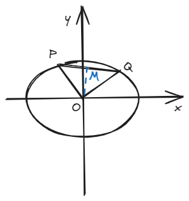
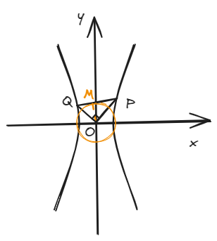
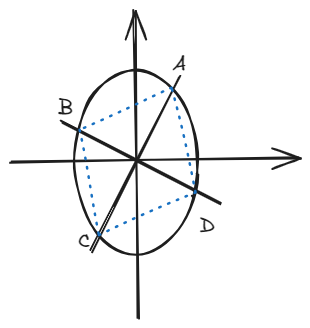
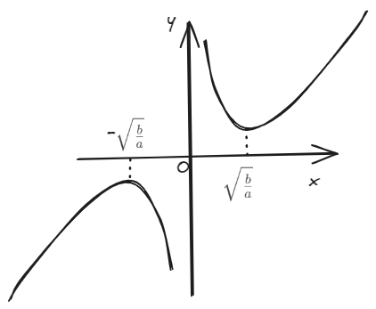

结论五：内准圆⚓︎
Abstract
两垂直过原点的直线交椭圆或双曲线于两点，可以得到原点到这两点连线的距离为定值。
一、结论描述⚓︎
1.椭圆⚓︎
\(O\)为坐标原点，\(P\)和\(Q\)是在椭圆上的两个动点，且始终满足\( OP \perp OQ\)，连接PQ，从O向PQ做垂线交于M，则：

2.双曲线⚓︎
\(O\)为坐标原点，\(P\)和\(Q\)是在双曲线上的两个动点，且始终满足\( OP \perp OQ\)，连接PQ，从O向PQ做垂线交于M，则：
Tip
在这种情况下一定有\(b>a\)，可以想想为什么。

说了这么多，那圆在哪儿呢？请看\( (1) \)和\( (3) \)式，\(OM\)的长度是个定值，这个以\(OM\)为半径的圆就是我们的内准圆。
二、结论证明⚓︎
这里就以焦点在x轴上的双曲线为例，设双曲线方程为：
设\( y_{OQ} = kx, y_{OP} = -\frac{1}{k}x \)，将\( OQ \)解析式联立双曲线可得：
又根据\( |OQ| = x_Q \cdot \sqrt{k^2 + 1} \)，得到\(|OQ|^2\)的值：
同理可以得到\( |OP|^2 \)：
由\( (7) \)和\( (8) \)式即可求得：
即\( (4) \)式，又将该式通分并由勾股定理得到：
由中学阶段所学的射影定理得：
先将\( (11) \)和\( (12) \)式带入\( (10) \)式中得到：
再将\( (13) \)式带入\( (14) \)式得：
最后\( (10) \)\( (14) \)\( (15) \)连等化简一下就得到：
得证，证毕
三、例题⚓︎
过椭圆\( \frac{x^2}{4} + \frac{y^2}{9} = 1 \)的中心做两条互相垂直的弦\( AC \)和\( BD \)，顺次连接ABCD得到一个四边形，则该四边形的面积最小值为\( \_\_\_\_\_\_ \)，最大值为\( \_\_\_\_\_\_ \)。

四、拓展结论⚓︎
在上述椭圆中，\( S_{\Delta POQ min} = \frac{a^2b^2}{a^2 + b^2} \)，\( S_{\Delta POQ max} = \frac{ab}{2} \)。
在上述双曲线中，\( S_{\Delta POQ max}\)不存在，\( S_{\Delta POQ min} = \frac{a^2 b^2}{b^2 - a^2} \)。
Note
实际上，这个结论可以解决，甚至说，秒杀上述例题————这正是积累二级结论丰富的好处，这道题作为一道填空压轴或轴题，不知玄妙的苦行僧埋头苦算，而智者早已越万重山！
证明：
Tip
此处证明以椭圆为例，因双曲线只有最小值一种情况，思路和椭圆接近，故不赘述。
下证最小值。
由底乘高的面积公式可得：
由均值不等式可得：
当\( |PM| = |PQ| \)时取等。
又将\( (13) \)式带入\( (17) \)式即可得到：
得证最小值，下证最大值（下面的操作也可以解决最小值，上面只是给个其他思路）。
由\( (12) \)和\( (16) \)式可得：
根据“双勾”函数性质，在\( |PM| \)和\( |OM| \)取最大差值的地方可以取到最大值，而当\( |PM| = |OM| \)时取最小值。
Note
“双勾”函数的性质：“双勾”函数是一种双曲函数，是形如\( f(x)=ax+ \frac{b}{x} \space (ab＞0)\)的函数。当\( x = \pm \sqrt{ \frac{b}{a}} \)时，取到单侧最小值或最大值。

由勾股定理得：
因\( |OM| \)为定值，所以当\( |OP| \)最大的时候就是\( |PM| \)最大的时候，此时也是和\( |OM| \)差值最大的时候（最小的时候已经知道了就是取等，所以这个取值范围不用担心），而\( |OP| \)最大值为\( a \)，此时可得：
得证，证毕。